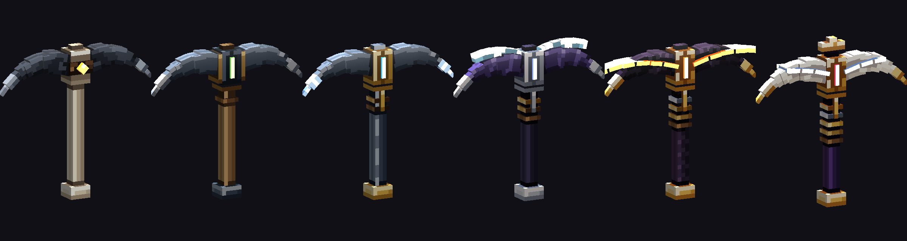
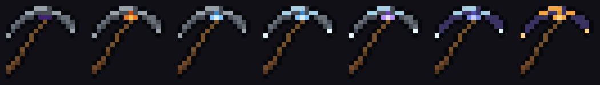
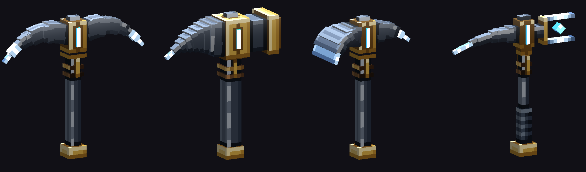
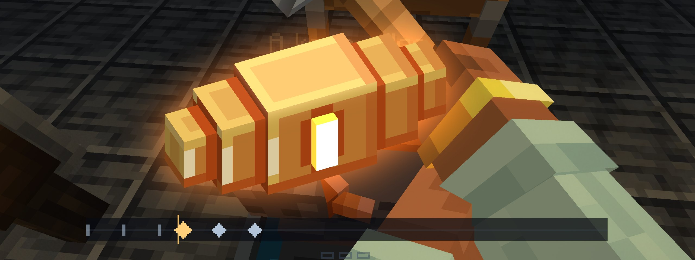
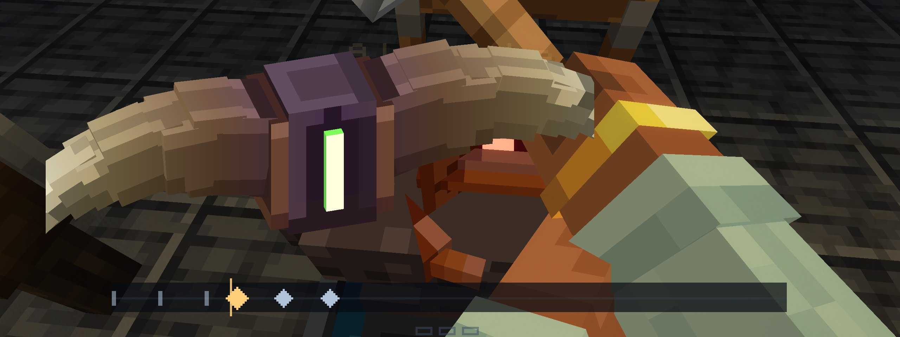
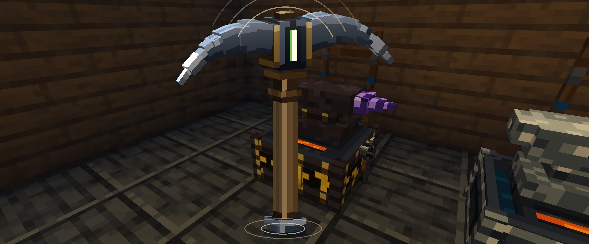
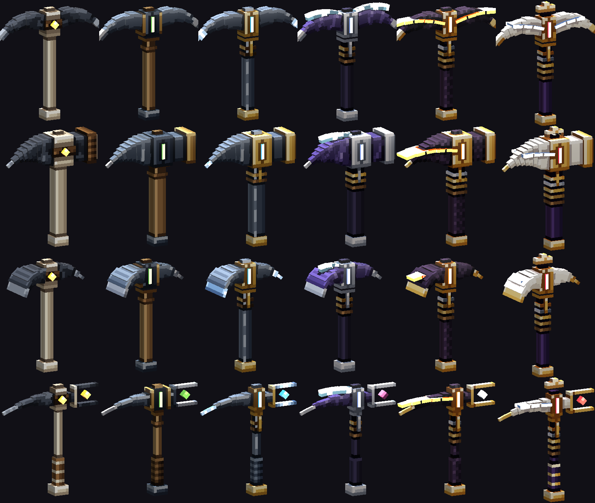
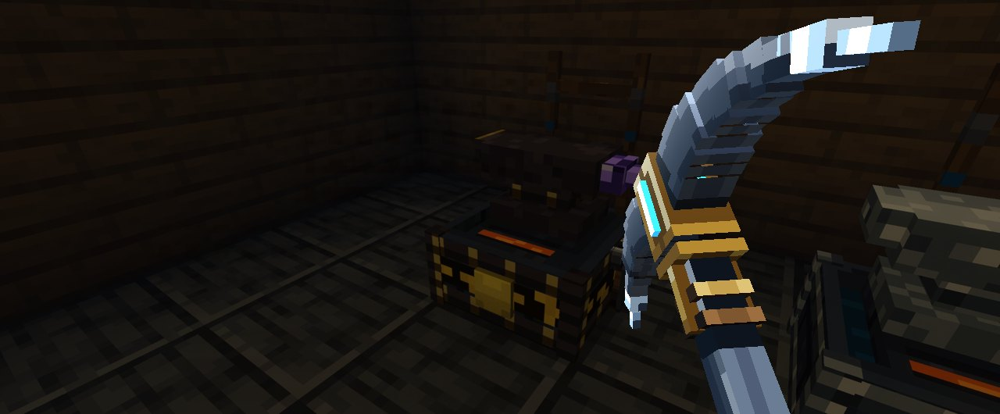

You stop being handed a pick. You make one at the War Anvil, raise that same pick through six ranks, and in the end it shows everything it has been through.
Nothing here is built. Below are real 3D models made with the weapon kit, the game's own weapon lighting, and mockups on real anvil shots. Your answers are at the bottom.

Every pick is forged at the anvil with your hands, from your first flint one to the last. The stone gives you an old head, and you hang it yourself.
You raise the same pick up the ranks. It keeps its name and its history, comes through death with you and never snaps.
A real model in your hands, a real two-handed swing, its own ring in the rock, and wear from everywhere you've taken it.
"I don't like the current pickaxe progression with that only that picks the pick that it gives you. I think I would much rather like some kind of forging progression for pickaxes as well, similar to how you forge weapons."
| Great | Your first real pick is one you made at home in about a minute. Every step up is a scene you'd watch again. In the mine it looks and rings like yours. |
|---|---|
| Weak | A forge screen that swaps numbers. Seven new sprites. A tier table with a better name. |
| Not allowed | An update that loses or weakens your pick. A scene that can fail and eat your materials. A forced chore. Mining made trivial. Seeing through rock. |
| Not in this plan | A new forge block. Picks as weapons. Bigger area mining. New ores. Any change to lodes, seams, caves, gate worlds or how weapons are forged. |
| Must keep working | Heavy strike, true strikes, the hum, lamps, Kindle, Hush, Call, vanilla picks, enchanting room, keeping it through death, getting a lost one back. |
I read the code and your saves. Your phrase is exact: the game gives you one finished pick. You pull it from a stone at an old adit, or your Hearth hands it over in a window if no adit is near. It then wakes along one fixed line of seven verses, by deeds, and two of those steps are a single right-click at the Forge. Nothing is ever made and nothing is ever chosen.

| Part | What it does now | Where | Plan |
|---|---|---|---|
| The stone and the Hearth | Give you a finished pick | WakingPick.java:66, 84, 101 | Give an old head instead |
| Seven verses | One line, no choice | PickVerses.java:56-131 | Old picks keep them; new picks are forged |
| Deeds | Break a heart, light a lamp, cut Deepglass, quiet a seep | PickVerses.java:136 | Keep. They're good. |
| Rites | Right-click the Forge with 3 diamonds, or a starmetal ingot | PickGifts.java forge() | Replace with anvil acts |
| Look in hand | Flat 16-pixel sprite | models/item/waking_pick*.json | Real model |
| The dig | Small one-hand motion; third person is vanilla's | DigMotion.java | Real two-handed swing |
| Strike sound | Depends only on the ore | StrikeFeel.java | The pick gets its own ring |
| Mattocks | Six grid recipes, still craftable | GearItems.java:77-95 | Retire into a form |
| Tasks page | No pick steps at all | Goals.java:30 | Add a Pick tab |
| War Anvil | Heat, rhythm, acts, memory, quality, rebuilds, the draw | arms/anvil/ | Reuse all of it |
| Case | What happens now |
|---|---|
| Your disappointment | New World (11): level 8, 18 ores mined, the pick still Asleep at 20 of 131 wear. Full test 1: still Asleep, with a wooden and a stone pick doing the work. No save of yours has got past Asleep. |
| What good looks like | A Sovereign Longsword at the anvil: heat, draw out, twist, starlight, grind, hilt, balance, the card, the draw. |
| Ordinary | At rank D a vanilla iron pick takes seconds and digs at 6. The Asleep pick digs at 4, so nothing makes you hold it. |
| Awkward | A rank E player whose pick has reached Tempered (diamond level). The rank and the pick disagree, and any new system has to deal with that. |
| Something missing | No adit near, or the pick falls in lava. Today the Forge remakes it for 3 iron. |
The want disappears at one line of code: WakingPick.give makes the finished item. After that, no step involves making anything.
| What you feel | Likely cause | For it | Against it | How we'd know |
|---|---|---|---|---|
| "The pick it gives you" | It's given, not made | Your words, the code | You may like the stone itself | The plan keeps the pull and changes what it gives |
| Lesser than the weapons | Flat sprite against sculpted models | The model files | You haven't said this | Compare the two images above |
| It never moves on | The first deed needs a lode's heart | Your saves | Your worlds are young | Forging gives a step up with no deed needed |
| Upgrades feel empty | A rite is one click | PickGifts.forge | No save reached one | Stage 2 replaces them |
| A. Repair it | B. Into the War Anvil (my pick) | C. Parts, and a third forge | |
|---|---|---|---|
| What | Keep the given pick; turn rites into scenes; give it a model | Forge picks at the anvil: four forms, six ranks, one pick raised | Choose head, haft and binding as separate parts at a new forge underground |
| Ends "the pick it gives you" | No | Yes | Yes |
| Level with weapons | Partly | Yes, same scene and rules | Further, at a price |
| New decisions | None | One form, one colour press | Several per pick |
| Cost | Small | Medium | Large, and a third forge to maintain |
C loses because you asked for "similar to how you forge weapons", and part systems add decisions and paperwork. Tinkers' gets criticised for exactly that, though that's forum opinion. A loses because the pick is still handed to you. If you do want to pick head and haft yourself, B can take that on later. If the first-person anvil turns out wrong for a pick, the armour forge's camera is the fallback.
Mockup Same door, a Picks tab. No separate button for a half-made part, so you can't press the wrong one.
The first forged pick costs what a mattock costs today, with a log in place of the sticks: two of the rank's metal, a core and an Essence Shard. Bring the old head from the stone and all you need is a log and a string. Picks use the same levels and anvil rebuilds as weapons.

| Form | How it digs | Speed | Lasts | Opens |
|---|---|---|---|---|
| Delver | The true pick. Fastest in plain rock, and it hums toward metal within 16 blocks. | 100% | 100% | From the start |
| Breaker | All weight. The heavy strike is ready sooner and wears it less. Still three blocks, never more. | 85% | 130% | After your first lode's heart |
| Mattock | One tool for stone, wood and earth. This replaces the six crafted mattocks. | Stone 90%, earth 120% | 110% | From the start |
| Sounder | The listener. A wider seam on true strikes, more bonus ore, a longer hum, and it hears further when you tap the rock. | 90% | 80% | After your first lamp |
Change your mind and you can re-draw a pick into another form at half the cost, so the choice is never a trap. Each form is also forged to its own beat, the way each weapon is. Try them:
| Rank | Forged by | Delver speed / uses | Vanilla for that metal | What it learns, and how |
|---|---|---|---|---|
| E Wildhide | Hand: knap the points, bind, hang the head | 5 / 300 | stone 4 / 131 | The hum (Delver and Sounder) |
| D Beastbound | Heat, cut the eye, draw the points, run the colours, hang | 7 / 650 | iron 6 / 250 | Kindle: break a lode's heart |
| C Gatewrought | Adds steel the tips with diamond | 9 / 1,800 | diamond 8 / 1,561 | Sounding: light a Delver lamp. A wider seam comes with the diamond. |
| B Veilwoven | Adds thread the spine with Deepglass | 10 / 2,200 | netherite 9 / 2,031 | Long Sounding: cut Deepglass |
| A Lordscale | Adds pour the seam on a Lord's anvil | 11 / 2,700 | none | Hush: quiet a seep |
| S Sovereign | Adds the starlight | 12.5 / 3,400 | none | Call: the starmetal itself |
The deeds stay what they are, things you do underground. You no longer need the pick on you, and a deed you've done is remembered by you, so any pick you forge can take that gift. If you do the deed after raising the pick, the next time you're at the anvil a five-second scene works it in. Forging well lifts speed and uses by up to 12%, and from memory you can skip scenes once you've made one Masterwork.
The acts come from how picks are actually made. The hole for the haft is cut and driven hot from each side in turn, and the metal has to stay thick round it (FAO forge manual). A pick head goes on a tapered haft and is seated by rapping the haft's wide end on something solid until it climbs and bites (Wonkee Donkee). Hardened points are tempered by watching colours run along the steel (smiths' forum, hobbyist advice).



The billet and the head are shaded by the game's own shader over a real anvil shot. Scenes run 25 to 45 seconds the first time and can't fail, and the finished pick is drawn from the slot like a weapon.
This is the new signature act. There's only one press in it, and it's a choice rather than a test. The colour on the point decides what you've made: straw cuts fastest and wears fastest, blue is slower and lasts much longer. Whichever you pick stays visible on the steel.
Working demo Real model. The game would draw this in its weapon shader, which already has a moving heat front.

| What | How | Why it's worth it |
|---|---|---|
| A real swing | Two hands, first and third person, each form its own arc: the Delver from the shoulder, the Breaker a big overhead, the Mattock a low chop, the Sounder short taps. An off-hand torch keeps it to one hand. Timing stays the game's. | You see this more than anything else in the game. I could find no good written account of how a pick is swung, so the builder works from film of real swings, and you judge one form before the rest. |
| Its own ring | Each pick has a note set at the anvil by its form, rank and how well it was made. It sounds with the ore's note and shifts slightly each blow, with several takes. All synthesised by our tools, no downloads. | The Singing Deep finally has your pick in it. Repeating one sound tires the ear, and varying it fixes that. |
| It shows | Rings of old metal on the haft. The grip darkens with your hands, the points brighten with use, a notch for every ten lodes. The tooltip tells its story: forged by you on day 12, 4,120 blocks, 18 hearts. | Real miners used one pick for a career and passed it on (Tarleton). |
| Dressing | A 3 to 5 second scene at the anvil for one metal. It mends a quarter and leaves it keen for 200 blocks. You never have to. | Miners had their picks re-sharpened at the mine's forge (Gezähe). It's a treat, not upkeep. |
| Never snaps | At its last use a forged pick goes blunt and slow until it's dressed. | The tool you keep can't vanish in your hands. |

Echo and Glass, approved for the mining plan on 28 October, make ores and caves glow through the rock. The next day, about armour, you said abilities like seeing mobs, ores or blocks feel like cheats. I recommend turning them into hearing. Sounding: you stand still and tap the rock, and it answers. Tight rock stays quiet. A cave behind the wall sounds hollow from that direction and dust falls from that side, and a lode answers with its own note. Nothing glows. It's what miners actually do, tapping the roof and listening for tight or drummy rock (NIOSH). Decision 8 is yours.
A forged pick carries a versioned record of its form, how well it was made, the colour, who made it, its tally and its gifts. Old picks keep theirs. Nothing new is stored in the world or the Hearth.
| What goes wrong | What happens | How you recover |
|---|---|---|
| You leave or disconnect mid-scene | The work waits, as it does for weapons | Come back |
| The pick falls in lava | The anvil remembers your best rank and form | Make it again at half cost |
| Old pick is ahead of your rank | It keeps its rank | The next raise waits for your rank |
| You did a deed after raising it | The anvil offers to work it in | Five seconds, free |
| No adit near home | Your Hearth keeps the head for you | Same path as today |
| Worn out | It goes blunt, it never breaks | Dress it |
Privacy: the maker's name on the item, same as weapons. Performance: one model per held pick, the same cost as a weapon. Cost: none beyond building it. AI: not applicable. Multiplayer: everything lives on the item, each player has their own work at the anvil, helpers make it twin-struck, and the stone stays for the next player.
| Case | Today | With this plan | Why it's better |
|---|---|---|---|
| Ordinary: a new player at the anvil level | Finds an adit, gets a pick, digs at stone speed, has no reason to hold it | Pulls the old head, hangs it at the anvil in about a minute, gets a Wildhide Delver at 5 / 300 that hums | First pick is theirs, better than stone, and shows what the anvil does |
Yours: New World (11) | Asleep at 18 ores, nothing to do but find a heart | Bring it to the anvil, free, ten seconds: a Wildhide Delver. Raise it to D when you've got iron. | Progress is at your anvil, and doesn't wait on luck underground |
| Awkward: rank E with a Tempered pick | Mining at diamond level with no record of why | It becomes a Gatewrought Delver with every gift it had. The next raise waits for rank B. | Nothing lost, and the rule is clear |
| Something missing: no adit, or lost in lava | Hearth window, or 3 iron at the Forge | Hearth keeps the head, or Make it again at the anvil | You're never stuck, and it's still a forge moment |
Today
With this plan
Automatic tests: every form and rank forged, raising keeps history, every old verse and mattock migrated, late gifts, the three-block limit, blunt not broken, kept through death, saved data round trip, the journey ledger, then the full suite in CI. Whether it feels right is your call, and no test decides that.
The model, the Picks tab, cut the eye, draw the points, run the colours, hang the head, the card. CI shots to you. Stops for you.
The designs, four beats, the C, B, A and S acts, the numbers, each form's way of digging, re-draw.
One form, first and third person, you judge it, then the rest. At most two rounds before asking you.
The stone gives a head. Saves, mattocks, the Pick tab on Tasks, the trail, the recipe book, enchanting.
Rings, wear, the tally, dressing, going blunt.
About 26 to 36 builder hours, scaled from the War Anvil (55 commits in about 25 clock hours) and the Singing Deep (about 31). The swing is the biggest unknown, because the Swing Studio rounds passed their numbers and got worse.
Stages 1 to 3 only add things and change nothing that exists. Stage 4 is the one switch, and one commit undoes it. If a save test fails or you don't like stage 1, we stop there.
Tap Yes or No. Your answers save as you tap and I read them from here. Add a note to change anything.
docs/forged-pick/PLAN.md on the branch claude/forged-pick-plan-c59985.
All art and sound will be ours, made by the kits in tools/art.
Nothing is built until you say yes.